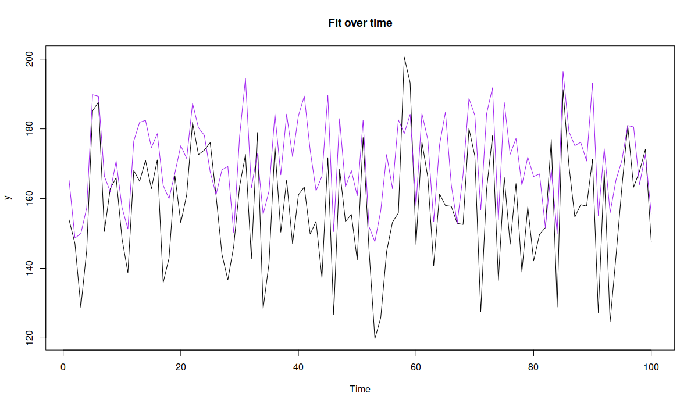
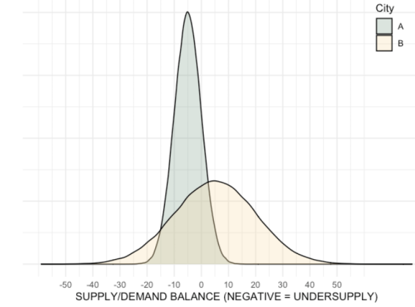

6 Logistics
TOC
- Misc
- Demand Forecasting
- Safety Stock
- Economic Order Quantity (EOQ)
- Order-Up-To Level Policy
- Reorder Point
- Decision Impact Metrics
- Profit functions for perishable products
- DoorDash
- Supply Chain
- Warehouse Management
Misc
Goal: develop a replenishment policy that will minimize your ordering, holding and shortage costs.
- Ordering Costs ($ per order): fixed cost to place an order due to administrative costs, system maintenance or manufacturing costs
- Holding Costs ($ per unit per unit of time): all the costs required to hold your inventory (storage, insurance, and capital costs)
- Shortage/Stock-out Costs ($ per unit): the costs of not having enough inventory to meet the customer demand (Lost Sales, Penalty)- Forecast PI widths serve as a proxy for inventory holding costs and provides valuable input for setting a target service level
- Packages - {planr} - uses opening inventory, sales forecasts and supply variables to calculate projected inventory and projected coverage calculations (article)
- Question: “Due to the complexity/cost of maintaining inventory management system. Would it be sufficient to just set a safety stock level and replenish once the SKU dips below that level?” - The more products you handle, the more an inventory management system matters. If you have 1000s or 10s of 1000s of different products, it makes a large difference whether you do demand forecasting along with implementing the Order-Up-To Level Policy, etc.
- Variables of interest that need to be forecasted for various decisions - Stock/No Stock - should we continue to stock a product or discontinue the product and just let the current stock dwindle to zero. - Mean of Demand - Replenishment - how much product should we restock - Mean and Variance of Demand - Forecasts in conjunction with a hypothesized demand distribution (parametric) vs build-up of the empircal distribution via bootstrapping (non-parametric) - Returns - customer returning products - Net Demand which is equal to Demand - Returns - Can be forecasted itself or by forecasting Demand and Returns separately. - Last Time Buy (LTB) - the supplier’s “last call” for a part or component. The final chance an enterprise will have to buy the part before the supplier stops producing it. - Rate of Demand Decline
Terms
- Active References - a product may have multiple SKUs. All SKUs would be needed in order to calculate stats for that product. The active reference for a product is one SKU that encompasses all other SKUs. - e.g. Last season’s dress “C” has been replaced by the new dress “D”. Even though both dresses are identical, they have different SKUs. Dress D’s SKU will be the active reference. Therefore, if the retailer sold two units of C in the past and three units of D this week, Nextail will show D having sold five units. - Also seen this term used when referring to all unique SKUs on an order sheet as the total active references.
- Linked Lines (aka Silent Switches) - refer to when several products in a retailer’s inventory are commercially equivalent. In other words, when identical products are identified by multiple SKUs. - Example: continuity products are ordered over multiple seasons or years or when large orders are split among different suppliers
- Order Components
 - Order: The “shopping basket” full of items you’ve just purchased. - Lines: The different products within your order, recognized by warehouses as each individual Stock Keeping Unit (SKU) or Universal Product Code (UPC) number. - Units: The quantity of each line.
- Order: The “shopping basket” full of items you’ve just purchased. - Lines: The different products within your order, recognized by warehouses as each individual Stock Keeping Unit (SKU) or Universal Product Code (UPC) number. - Units: The quantity of each line. - Reference - id for a product (e.g. SKU)
- Rotations - speed at which products enter and exit the warehouse - High rotation: Units enter and exit continuously. These items are in high demand. - Medium rotation: Units enter and exit in smaller volumes than those in High Rotation. - Low rotation: These are the items that spend the most time in the warehouse, and are in low demand.
- SKU - Stock Keeping Unit - Usually a bar code that has all the information to distinguish it from another product. These attributes can include manufacturer, description, material, size, color, packaging, and warranty terms. When a business takes inventory of its stock, it counts the quantity it has of each SKU.
- Supply Chain - a network of processes and stock locations built to deliver services and goods to customers.
- Wastage - where supply greatly outstrips demand, and the product expires
- S&OP - Sales & Operations Planning
Demand Forecasting
Misc - Also see DoorDash >> Forecast Supply and Demand - Reinforcement Learning for Inventory Optimization Series III: Sim-to-Real Transfer for the RL Model | by Guangrui Xie | Jan, 2023 | Towards Data Science
Metrics for judging demand forecasts
 - change in the number of Stock-Out days - percent change in Service Level - change in Profit - change in wastage - change in inventory costs
- change in the number of Stock-Out days - percent change in Service Level - change in Profit - change in wastage - change in inventory costsNotes from Are Your Demand Forecasts Hurting Profits and Service Levels - Blue Dot Thinking’s WasteNot API service ($) WasteNot (logistics analytics firm) uses prophet for demand forecasting which consistently under-predicts, so they use an adjustment for better forecasts
- Prediction adjustment - (e.g. for perishables) calculate an optimal “Buffer Multiplier” value — each predicted value from the statistical forecast is multiplied by the multiplier, resulting in a higher number of units replenished each day - Variables used: - unit\_sale\_price/unit\_cost - historical variability - shelf-life (seconds) - stock levels They didn't show the formula, but I'm guessing their modeling residuals with these variables.Notes from Case Study: Applying a Data Science Process Model to a Real-World Scenario A VERY detailed article that goes through a scenario of step-by-step planning and execution of changing a manual stock replenishment process to an automated one
As a guide, they use [DASC-PM](https://medium.com/towards-data-science/dasc-pm-a-novel-process-model-for-data-science-projects-9f872f2534b1) (DAta SCience - Process Model) - a structured and scientific process for project management - Project manager tries to examine whether the project can fundamentally be classified as feasible and whether the requirements can be carried out with the available resources. - Expert Interviews: Is the problem in general is very well suited for the deployment of data science and are there corresponding projects that have already been undertaken externally and also published? - Data science team: Are there a sufficient number of potentially suitable methods for this project and are the required data sources are available? - IT department: check the available infrastructure and the expertise of the involved employees. Demand forecasting model - Requirements: - Accuracy of 75%. This means that the forecasts for quantities of each product should deviate from actual requirements by no more than 25%. - Produce monthly planning cycles and quantify the need for short-term and long-term materials - Data sources: Order histories, inventory and sales figures for customers, and internal advertising plans - Features: seasonality, trends, and market developments - Forecasts regenerated every month - Forecasts loaded into internal planning software - Projections will be analyzed and, if need be, supplemented or corrected. - Planners can make their corrections during the first four working days of the month. - The final planning quantity will ultimately be used by the factories for production planning. - Example: IBM Planning Analytics - Allows for the creation of flexible views where the users can personally choose their context (time reference, product groups, etc.)and adjust calculations in real-time. - Sounds like expensive optimization software with a snazzy UI - Final plans are loaded into the Data Lake after processing by the planning teams so they can be referenced in the future. - User Integration - Users are included in the development from the beginning to ensure technical correctness and relevance and to ensure familiarity with the solution before the end of the development phase. - Simple line and bar charts for processes and benchmarks are used, along with tables reduced to what is most important. - Planners get training sessions to help them interpret the forecasts and classify their quality. - Complete documentation is drafted - Technical part: data structures and connections - Content part: jointly prepared with the users to describe the usage of the data product - Post-Development Phase (i.e. maintenance of the project) - Constant automated adjustment of the prediction model to new data - Various parameters such as the forecast horizon or threshold values for the accuracy of the prediction can be made by the planners - Problems occurring after the release of the first version are entered via the IT ticket system and assigned to the data science area - At regular intervals, it is also checked whether the model still satisfies the expectations of the company or whether changes are necessary.Forecasting shocks is difficult for an algorithm - Notes from Why Good Forecasts Treat Human Input as Part of the Model - Preprocessing - It can be better to smooth out (expected) shocks in the training data and then add an adjustment to the predictions during the dates of the shocks. - The smoothed out data will help the algorithm produce more accurate predictions for days when there isn’t an expected shock. - e.g. kalman filter with parameters for seasonality, trends from {{tsmoothie}} - Nothing special about this smoother. Probably just the method in tsmoothie that performed best for them (which is a good reason to use it). - Approaches for manually replacing oulier values - Replace the outlier week with the most recent week prior to the dip as a proxy for what should have happened. - Use domain knowledge - e.g. Marketing departiment is expecting 10% growth the week after it’s new promotion - Replace with one of the previous methods, then apply a smoothing algorithm
 - Shows the Kalman filter by itself fails to replace the outlier dip with the normal, expected peak, but the manual adjustment + Kalman gives us what we want - Examples of shocks that may need training data to have manual adjustments and not be smoothed by an algorithm - one-time spikes due to abnormal weather conditions - one-off promotions - replace the outlier week with the most recent week prior to the dip as a proxy for what should have happened. - a sustained marketing campaign that is indistinguishable from organic growth. - Prediction Adjustment - Extreme events (i.e. unprecedented promotions or weather), where the expected impact is well outside of any historical data, may prove impossible for forecasting methods to produce an adequate forecast - Since it’s outside the range of historical data, building a more complex model or just including weather or promotional features won’t help. - Requires using domain expertise of the event to use to adjust the predictions - Make sure to build-out the code infrastructure so that each manual adjustment should just feel like adding another input to the model.
- Shows the Kalman filter by itself fails to replace the outlier dip with the normal, expected peak, but the manual adjustment + Kalman gives us what we want - Examples of shocks that may need training data to have manual adjustments and not be smoothed by an algorithm - one-time spikes due to abnormal weather conditions - one-off promotions - replace the outlier week with the most recent week prior to the dip as a proxy for what should have happened. - a sustained marketing campaign that is indistinguishable from organic growth. - Prediction Adjustment - Extreme events (i.e. unprecedented promotions or weather), where the expected impact is well outside of any historical data, may prove impossible for forecasting methods to produce an adequate forecast - Since it’s outside the range of historical data, building a more complex model or just including weather or promotional features won’t help. - Requires using domain expertise of the event to use to adjust the predictions - Make sure to build-out the code infrastructure so that each manual adjustment should just feel like adding another input to the model.Intermittent Demand - Misc - Also see ADAM ebook chapter, post, real world use case on adding an occurrence variable to an ETS model to handle intermittent data - The use case paper also includes a GAMLSS with truncated Normal distribution model with code that performed well - Uses {probcast} which has functions around gams, gamlss, and boosted gamlss models from {mgcv}, {mboost}, {gamlss}, etc. - Notes from - CMAF FFT: Intermittent Demand Forecasting (Video) - From authors of “Intermittent Demand Forecasting. Context, Methods and Applications” (see your book shelf) - Preferrable to avoid intermittence by aggregating data to a category that’s higher in the product hierarchy or lengthen the frequency. - Not always possible. For example, different SKUs have different lead times, so aggregating products into categories with the same protection intervals can be complicated. - Protection Interval is your horizon, which equals the length of the review period + length of the lead time - See Order-Up-To (OUT) Level Policy for details - Compound Distributions - Target - Incidence/occurrence (of Demand): Poisson and Bernoulli - Discrete positive Demand interspersed with zeros: Neg. Binomial - Sounds like zero-inflated, censored distribution - Options - Discrete Compound Poisson (aka Stuttering Poisson): Poisson + Geometric - Negative Binomial: Poisson + Logarithmic - Lumpy data - Data that’s intermittent and has extreme variability in demand sizes - Negative Binomial built to handle this type of data - Forecasting Mean Demand - Parametric - Exponential Smoothing - Popular method but bad for intermittent forecasting - ADAM extends ETS by adding an occurence variable to the model, so this might not be the case. - Biased on “issue points” (see video for more details) - Croston Method - Inversion Bias: we believe the mean demand is higher than predicted - SBA (Syntetos-Boylan Approximation) - *Recommended* - Corrects Croston bias - Supported by empirical evidence - Temporal Aggregation: Overlapping vs Non-Overlapping - self-improving mechanism - See video for details (although it wasn’t discussed in great detail) - Non-Parametric (aka Empirical) - Bootstrapping - resample in blocks or resample independently - independently is how you normally see bootstrapping - With blocks, bin your sequential data into non-overlapping partitions and resample independently within each partition. - Forecasting Demand Variance - Using the variance of the forecast error of the protection interval to estimate the variance of demand over the protection interval - Classical method is to calculate the variance of the errors over each review period and aggregate to the get the variance over the protection interval, but the above method is better empirically and theoretically - Diagnostics - Do NOT use metrics based on absolute errors (e.g MASE, MAPE) by themselves - Minimization of these metrics, by themselves, can result (i.e. over half of your values are zeros) in always recommending 0 value forecasts - Can be used in conjunction with bias correction measures - Scaled Mean Squared Error - Relative Root Mean Squared Error - Look at the predictive distributions instead of just the point forecasts - Accuracy Implication Metrics - measure the effect of the forecast on inventory
.png) - Y Axis: 1 - Fill_Rate; X Axis: Average on-hand inventory - Each method is a forecasting model - Think the Fill Rate is estimated from a simulation using the method’s forecast and a range of average SOH values as parameters
- Y Axis: 1 - Fill_Rate; X Axis: Average on-hand inventory - Each method is a forecasting model - Think the Fill Rate is estimated from a simulation using the method’s forecast and a range of average SOH values as parameters
Safety Stock (aka buffer stock)
- Misc - Notes from Article - Calculation of Safety Stock can be more useful than trying to improve forecast accuracy for intermittent(or sporadic) product time series (lotsa zeros).
- Safety stock - extra inventory held by a retailer or a manufacturer in case demand increases unexpectedly. This means it’s additional stock above the desired inventory level that you would usually hold for day-to-day operations.
- Replenishment cycle - cycle between replenishment (i.e. restocking) orders
- Fill rate (aka Fulfillment Rate)- the percentage of orders that you can ship from your available stock without any lost sales, backorders, or stockouts. - Fill Rate = (Total Orders Shipped / Total Orders Placed) x 100 - On average, companies typically maintain a fill rate of about 85%-95%. But ideally, you should strive for a fill rate between 97% and 99%.
- Reasons for safety stock: - Demand uncertainty - Every retailer and manufacturer will have products that sell well all year round and products that fluctuate in demand. - Lead time uncetrainty - deliveries arriving earlier or later than expected, a safety stock formula will help you to cover unexpected delays and demand fluctuation to maintain a consistent output. - lead time (aka performance cycle)- time required between the creation of a replenishment order and the effective store replenishment - Usually a distribution and not a constant, so it needs to be recorded in order to get a sample standard deviation thats used the safety stock formula - Factors: - deciding what to order or produce - approval time - submitting a purchase requisition - emailing vendors - manufacturing and processing of the product - delivery time from vendor - incoming inspection time - time it takes to put on the shelf - any additional time required to return to the start of the next cycle Stockouts - out of stock events - Safety stock determinations are not intended to eliminate all stockouts—just the majority of them Usually caused by: - Changes in consumer demand - Incorrect stock forecasts - Variability in lead times for raw materials - Costs due to stockouts - Loss of revenue - Loss of gross profit - Loss of customers - Reduced market share - Poor efficiency - Strained supplier and retailer relationships
- (Cycle) Service level (Z) - the probability that the amount of inventory on hand during the lead time is sufficient to meet expected demand – that is, the probability that a stockout will not occur. - Higher service level –> more safety stock - Independently choose a service level for groups of products based things such as strategic importance, profit margin, or dollar volume. - The retail industry aims to maintain a typical service level of between 90% and 95% depending on the product - Example:
.png) - At 95 percent service level, expect: - (D1) for 50 percent of replenishment cycles, not all cycle stock will be depleted and safety stock will not be needed - (D2) for 45 percent of replenishment cycles, the safety stock will suffice. - (D3) and for 5 percent of replenishment cycles, expect a stockout. - Kind of a confusing diagram but I think the y-axis is total stock and x-axis represents time (kinda sorta) - Stock dwindles as product is sold as the cycle ends, then stock is replenished after an order and begins to dwindle again.
- At 95 percent service level, expect: - (D1) for 50 percent of replenishment cycles, not all cycle stock will be depleted and safety stock will not be needed - (D2) for 45 percent of replenishment cycles, the safety stock will suffice. - (D3) and for 5 percent of replenishment cycles, expect a stockout. - Kind of a confusing diagram but I think the y-axis is total stock and x-axis represents time (kinda sorta) - Stock dwindles as product is sold as the cycle ends, then stock is replenished after an order and begins to dwindle again. - Safety Stock equations - When the demand interval doesn’t equal lead time interval - used to mitigate demand variability and lead time variability (σLT see next formula) is very small or zero - Safety stock = Z × √[PC / T1] × σD - PC = performance cycle, another term for total lead time - T1 = time increment used for calculating standard deviation of demand - σD = standard deviation of demand. - (Partial) Example: if the standard deviation of demand is calculated from weekly demand data and the total lead time including review period is three weeks. - PC = 21 days (3 weeks) - T1 = 7 days (weekly data) - Safety Stock = Z * √3 * σD - Example: Desired service level = 95%; seven-day manufacturing time and the one day needed to arrive at the warehouse; Standard deviation of weekly demand = 10 rolls - Safety stock = 1.65 * √[8/7] * 10 rolls - Safety stock = 18 rolls - When the lead time varies and demand variability (σD see previous formula) is very small or zero - Safety Stock = Z × σLT × Davg - Z is the z-score of the service level (1-sided, upper-tail) - e.g. 95% service level –> Z = 1.64; 90% service level –> Z = 1.28 -
qnorm(0.95)= 1.644854,qnorm(0.90)= 1.281552 - σLT is the standard deviation of the lead time - Davg is the demand forecast - Depends what the frequency of the series is, but you want an estimate of the total demand between orders - Example: If orders are made monthly and you forecast weekly sales, then your horizon is likely monthly and you sum around 4 weeks of point estimates to get D. - When both demand variability and lead time variability are present - demand and lead time variability are independent - Safety stock = Z × √[(PC/T1 × σD2 ) + (σLT × Davg)2] - demand and lead time variability are not independent - Safety stock = (Z × √[PC/T1] × σD) + ( Z × σLT × Davg) - Demand variability is the dominant influence on safety stock requirements. - With the recognition of what factors dominate an equation, it becomes easier to focus improvement efforts - Issues - Sometimes recommended safety stock volumes are larger than business leaders are comfortable having - alternative/supplement: order expediting - Reduce safety stock volume by keeping small amounts of expensive products and rely on air freight to cover peaks in demand. The cost of shipping a small percentage of total demand via air can be minimal compared to the cost of carrying large amounts of safety stock of the valuable material on an ongoing basis. - alternative/supplement: make-to-order (MTO) or finish-to-order (FTO) production environment - If lead times allow, MTO eliminates the need for most safety stock. Meanwhile, FTO allows for less differentiation in safety stock than finished-product inventory, which lowers demand variability and reduces safety stock requirements. - FTO and MTO also are well suited for situations where customers are willing to accept longer lead times for highly sporadic purchases.
Economic Order Quantity (EOQ) (aka Wilson Formula)
- the ideal order quantity a company should purchase to minimize inventory costs such as holding costs, shortage costs, and order costs - Usually used for purchase ordering (not production) - Assumes demand, ordering, and holding costs remain constant over time
- Goal: minimize the cost of ordering and holding stock, while still meeting demand and service level requirements
- Costs of ordering: - placing your order - delivery - transportation - receiving the order
- Costs of holding stock: - paying for stock in advance - warehousing - storage - depreciation

Order-Up-To (OUT) Level Policy .png)
- Time intervals (i.e. Review Interval) trigger a replenishment, not reorder points - Length depends on the industry - Examples - Manufacturing: 1 month - Retail: 1 week
- Misc - Notes from - CMAF FFT: Intermittent Demand Forecasting (Video) - From authors of “Intermittent Demand Forecasting. Context, Methods and Applications” (see your book shelf) - Should have more details on OUT replenishment model - UT-Dallas “Basestock Model CH. 13” Slides - Based on Cachon & Terwiesch book, “Matching Supply with Demand” (link)
- Inventory Position (IP) = Stock-on-Hand - backorders + On-Order-Inventory
- After every Review Interval, the OUT gets optimized according to Replenishment variables - Mean and Variance of Demand are estimated - Forecasts in conjunction with a hypothesized demand distribution (parametric) vs build-up of the empircal distribution via bootstrapping (non-parametric) - See Demand Forecasting >> Intermittent Demand >> Forecasting Mean Demand - Given updated variables, place order that raises IP to OUT level (S)
- Protection Interval is period that you should have enough inventory to cover. - The forecast horizon which equals the Review Interval + Lead Time
- Evaluate service at each level of an order: orders, lines, units. - Lines (SKU Level) - Whether to use Cycle Service Level (CSL) or Fill Rate (ReadyRate (?) is also a possibility) - CSL - probability of not going out of stock - not realistic but easy to calculate - Fill Rate measures true service offered to customers, but more involved in its application - Also see Safety Stock for more details on CSL and Fill Rate
Reorder Point
- The reorder point is the threshold amount of inventory at which you need place an replenishment order - once an item’s stock falls below PAR level, an optimised order quantity is generated
- Components used to determine a reorder point - Safety Stock - Reorder Point Formula - Periodic Automatic Replacement (PAR)
- Reorder Point = Safety Stock + (Davg × Lead time)
Decision Impact Metrics
- Other methods for determining forecast performance have serious flaws - Reasons industry benchmarks for forecast accuracy shouldn’t be used - diversity of business strategies (size of portfolio, product & brand positioning) - the level at which the forecast accuracy is measured and even the metric’s definition itself (especially with value-weighted formulas) may differ - Forecast Value Added (FVA) - FVA: The change in a forecasting accuracy metric that can be attributed to a particular process or participant in the forecasting process. - Example
.png) - Statistical model has 5% FVA vs Naive forecast - Adjusted Statistical Forecast has 2% FVA vs Naive Forecast - Forecast gets manually adjusted by management - Reasons why FVA shouldn’t be used - The difference in Forecast Accuracy (FA) metrics (e.g. MAPE) of the production forecasting algorithm and the naive forecasting algorithm is usually weighted by portfolio revenue, volume or number of items - A FA metric is not a key business performance indicator (KPI) - FA has little correlation with business performance. - Improving FA does not mean you are generating value. - Costs may increase, decrease or remain the same as accuracy changes. - FA metrics can contradict each other - Switching from one FA metric to another could profoundly alter your FVA results.
- Statistical model has 5% FVA vs Naive forecast - Adjusted Statistical Forecast has 2% FVA vs Naive Forecast - Forecast gets manually adjusted by management - Reasons why FVA shouldn’t be used - The difference in Forecast Accuracy (FA) metrics (e.g. MAPE) of the production forecasting algorithm and the naive forecasting algorithm is usually weighted by portfolio revenue, volume or number of items - A FA metric is not a key business performance indicator (KPI) - FA has little correlation with business performance. - Improving FA does not mean you are generating value. - Costs may increase, decrease or remain the same as accuracy changes. - FA metrics can contradict each other - Switching from one FA metric to another could profoundly alter your FVA results. - Constraints and business rules have to be considered and not just a forecast metric - e.g. allowed pack sizes, the minimum order quantity, the storage finite capacity, holding/excess costs, shortage costs, fixed costs, etc.
- Forecast Accuracy (FA) metrics are difficult to understand for normals - Using Decision Impact (DI) metrics can help eliminate: - “The forecast is always wrong!”, “The forecast is too this”, “The forecast is not enough that”, “What does 70% FA mean?”, “Is this good or bad?”
- Probabilistic Forecasts + DI metrics - Identify parameters (i.e. whatever value you’re forecasting) with the highest economic risk - Economic risk is related to the size of the PI of the forecast - Investigate potential causes for the risk and find solutions - Example - Calculate - DIa min - the costs associated with the forecast at the 5% percentile - DIa max - the costs associated with the forecast at 95% percentile. - Calculate economic risk

- Decision-based Components - components that takes into account the decision being made using the forecast - Example: One weather forecast predicts 4 inches of rain but another forecast predicts 0 inches of rain. The next day it rains 1 inch. - If the decision being made was whether to take an umbrella, the first forecast is the best forecast even though its error is worse than the second forecast. - Components - Decision Function - for any forecast input, simulate the decision process and evaluate the quality of the final decision - Decision Impact (DI) - metric that defines how decision quality is measured - usually in terms of financial cost - A “North Star” type metric
- Decision Cost function: The cost function is used to score each stock replenishment decision based on its true business impact usually in terms of financial cost - Example: Walmart retail data (M5) - The Decision Cost is the sum of following factors: - Ordering, shipping and handling cost (Fixed Costs) - Fulfilling an order generates costs for the ordering, preparation, expedition, transportation, etc. - Let’s assume these costs represent $40 per range of $1000 of purchase value. - Holding cost (Excess Costs) - Holding costs are associated with the storage of unsold inventories. - Let’s assume the annual holding cost is 10% of the inventory value (valued at purchase price), i.e. 0.19% per week. - Shortage cost - When demand exceeds the available inventory, both the demand and customer goodwill may be lost. - As retailers propose a wide range of similar products, a part of the demand is carried to other products. - Let’s assume that only half of the sales will effectively be lost. The shortage cost could then be measured as 50% of each lost sale gross margin. - Other Considerations - Replenishment Strategy - Leadtime - Order Cycle - Replenishment Policy - Safety Stock - Additional Product Information - Gross Margin - Pack Sizes - Initial Inventory - example: using the safety stock value - Computational Costs - Algorithm training time - Compute size - Data pipeline
- Types of forecasts that are required - “actual” forecast: forecast from a candidate model that will potentially go into production - “naive” forecast: forecast from a simple method (e.g. seasonal-naive, simple moving average, etc.) or a previous used method
- Steps
- Decide how best to measure the Decision Impact as related to the forecast
- e.g. financial cost
- Formulate a decision cost function
- e.g. fixed costs + excess costs + shortage costs (see above)
- Generate forecasts on a test/assessment set.
- Calculate decision impact costs:
- Actual cost (DIa): cost after applying the decision cost function to the “actual” forecast (see above)
- Naive cost (DIn): cost after applying the decision cost function to the “naive” forecast (see above)
- Oracle cost (DIo): cost after applying the decision cost function to the observed values - This would be the costs of a forecast in which we had perfect knowledge. (So probably just fixed costs)
- Calculate Decision Impact metrics:
- Earned Value (aka Forecast Value Added) (DIna) - DIna = DIn - DIa
- Unearned Value (aka yet-to-be earned value)(DIao) - The value that could still be gained by improving forecasts - DIao = DIa -DIo
- Total Earnable Value (DIno) - The range of earnable value - DIno = DIn - DIo
- Proportion of the Earned Value - DIna/DIno
- Proportion of yet-to-be earned value - DIao/DIno
- Decide how best to measure the Decision Impact as related to the forecast
- DI metrics for all generated forecasts can be used to calculate a quarterly, semestrial, or annual ROI for the product planning department - ROI = sum(DIna)- (cost of people, tools, etc. used by department to generate forecasts)
Profit functions for perishable products
- The newsvendor problem is a class of problems, where the product can only be sold one day, after which it goes to waste. So this is appropriate, for example, for perishable products in retail
- Notes from An Integrated Method for Estimation and Optimisation; associated paper
- If we order more than needed, we will have holding costs. In the opposite case, we will have shortage costs.
- Based on these costs and the price of product, we can find the optimal amount of product to order, that will give the maximum profit.
- Instead of a two-stage problem (see DoorDash section): optimising the forecast model via MSE or any other conventional loss and then solving the optimisation problem, we could estimate the model via maximisation of the specific profit function, thus obtaining the required number of product orders directly.
- Calculate profit as a linear
π(_q__t_,_y__t_)={_p__y_t−_v__q_t−_c__h_(_q__t_−_y__t_),_p__q_t−_v__q_t−_c__s_(_y__t_−_q__t_),for _q__t_≥_y__t_for _q__t_<_y__t_,
- Terms - yt is the actual sales - p is the price of the product - qt is the order quantity - v is the cost of production - ch is the holding cost - cs is the shortage cost
library(greybox)
# Generate artificial data
x1 <- rnorm(100,100,10)
x2 <- rbinom(100,2,0.05)
y <- 10 + 1.5*x1 + 5*x2 + rnorm(100,0,10)
ourData <- cbind(y=y,x1=x1,x2=x2)
# Define price and costs
price <- 50
costBasic <- 5
costShort <- 15
costHold <- 1
# Define profit function for the linear case
lossProfit <- function(actual, fitted, B, xreg){
# Minus sign is needed here, because we need to minimise the loss
profit <- -ifelse(actual >= fitted,
(price - costBasic) * fitted - costShort * (actual - fitted),
price * actual - costBasic * fitted - costHold * (fitted - actual));
return(sum(profit));
}
# Estimate the model
model1 <- alm(y~x1+x2, ourData, loss=lossProfit)
# Print summary of the model
summary(model1, bootstrap=TRUE)
Coefficients:
Estimate Std. Error Lower 2.5% Upper 97.5%
(Intercept) 36.5177 14.2840 2.7783 51.4844 *
x1 1.3622 0.1622 1.1909 1.7528 *
x2 3.3423 2.7810 -6.5997 5.9101Interpretation: with the increase of the variable x1, the orders should change on average by 1.36
Plot
plot(model1, 7)
Figure above corresponds to the orders (purple) and would cover roughly 90.91% of cases (black), so that we would run out of product in approximately 10% of cases, which would still be more profitable than any other option.
Nonlinear case - See link to associated paper above - The only thing that would change is the loss function, where the prices and costs would depend non-linearly on the order quantity and sales.
DoorDash Notes from https://towardsdatascience.com/managing-supply-and-demand-balance-through-machine-learning-70d4f0808617
- 2-stage solution - forcasting supply and demand - optimizing supply of workers with demand of food orders
- Define the problem - Supply and demand imbalance (i.e. drivers and food orders) - Effects - For consumers, a lack of driver availability during peak demand is more likely to lead to order lateness, longer delivery times, or inability to request a delivery and having to opt for pick up. - For Dashers, a lack of orders leads to lower earnings and longer and more frequent shifts in order to hit personal goals. - For merchants, undersupply leads to delayed deliveries, which typically results in cold food and a decreased reorder rate.
- Optimization Strategies - Balancing at the delivery level means every order has a Dasher available at the most optimal time - consumer preferences and other changing conditions in the environment, such as traffic and weather, make it difficult to balance supply and demand at the delivery level - Balancing at the market level means there are relatively equal numbers of Dashers and orders in a market but there are not necessarily optimal conditions for each of these groups at the delivery level.
- Metric - Number of hours required to make deliveries during a time period - Optimize keeping delivery durations low and Dasher (drivers) busyness high - Able to account for regional variation driven by traffic conditions, batching rates, and food preparation times. - Units: hourly or day-parts (e.g. breakfast, lunch, dinner) - There’s too much variation during a day in order to aggregate to a higher level metric. Demand and supply would be artifically smoothed. - Example: - Sunday at dinner time in New York City, and we estimate that 1,000 driver hours are needed to fulfill the expected demand. We might also estimate that unless we provide extra incentives, only 800 hours will likely be provided organically. Without mobilization actions we would be undersupplied by about 200 hours.
- Optimization - Adjust supply of drivers by incentivizing with pay bonues during high demand hours
- Forecast Supply and Demand - LightGBM - Predictors - Information about population size, general traffic conditions, number of available merchants, climate, and geography - character variables were replaced with embedding vectors - Supply - Counterfactual to understand how to make tradeoffs between supply and costs - How will supply levels change if we changed incentive levels so that we can ? - I assume “incentive_level” is a variable in the supply forecast model, so this could just be adjusted in “newdata” and a prediction (or maybe during a training session?) made to see the effects on supply.
- Decision Making - consumes supply and demand predictions and attempts to generate a set of optimal actions - Mixed-Integer Programming (MIP) - linear optimization (see bkmks, ompr pkg) - easy to formalize, implement, and explain to stakeholders - Custom objective function for minimizing undersupply with several constraints. - Can be configured to favor either profitability (profit per customer?) or growth (increase in orders per customer?) - or maybe its about drivers — profitability (just enough incentive to get just enough drivers?) or growth (not sure what the “driver” angle is here) - Constraints - Never allocate more than one incentive in a particular region-time unit. - Never exceed the maximum allowable budget set by our finance and operations partners. - regional - different budgets, custom penalties, exclusion criteria for which units should not be included in the optimization, or incentive constraints that are guided by variability of the inputs. - Optimizer must account for uncertainty - City B’s forecast distribution has substantial uncertainty, and it’s mean says it will have enough drivers (i.e. oversupply) - City A’s forecast distribution is more certain, and it’s more likely to be undersupplied. - W/o taking uncertainty into account, the optimizer will not take into account that there’s a sizeable chance B will be undersupplied - Taking uncertainty into account sometimes causes an over-allocation of resources to these uncertain regions (small areas, fewer orders, fewer drivers, larger variance) - They do something with resampling to solve this but I didn’t quite understand it.
Supply Chain
Misc - Notes from: 4 Smart Visualizations for Supply Chain Descriptive Analytics
Flow Distribution of units between production areas and markets - Data - Source: the production facility name (left-side) - Target: the market supplied (right-side) - Units: the number of items flowing (width of bars) - Interpretation - India is the biggest country for production output - Japan market demand is mainly supplied locally - USA and Germany do not have local production facilities
Network Optimization

- x-axis: each column represents a demand scenario (i.e. there are 50 demand scenarios in this example) - y-axis: are the production/supply locations - A blue box means that that location is included in the optimal configuration of locations for that scenario - e.g. In scenario 1, having a low capacity facility in India and a high capacity facility in India is optimal for this scenario. - I think this viz can be done with {[waffle](https://github.com/hrbrmstr/waffle)} using `geom_waffle`_without_ `theme_enhance_waffle` - Simulate how the variability of demand in various markets (e.g. 50 scenarios) affects the optimal distribution of production/supply locations - Hopefully a configuration of locations will be optimal for a preponderance of scenarios. Assuming each scenario is equally important, that configuration of locations is the optimal choice. - Or I guess you could weight each scenario by frequency or something. Maybe you have a distribution of scenarios from which you drawing from. - Linear programming - Also see [Optimization, general](Optimization, general) - Set decision variable, objective function - list the constraints according to the demand for each market - Solutions are indicator variables for production/supply locations and whether they are 1 or 0. - There should be a boolean variable for a high capacity location and low capacity location in each country - For each variable, 1 indicates that location should be built or that it should be in operation at that particular capacityPareto Plot - Data
 - “BOX” is the number of box/packs picked of that product (“SKU”) for that order (“ORDER_NUMBER”) on that date (“DATE_FORMAT”) - Preprocessing - Sum the number of boxes picked per SKU - Sort your data frame by descending order on BOX quantity - Calculate the cumulative sum of BOX - Calculate the cumulative number of SKU
- “BOX” is the number of box/packs picked of that product (“SKU”) for that order (“ORDER_NUMBER”) on that date (“DATE_FORMAT”) - Preprocessing - Sum the number of boxes picked per SKU - Sort your data frame by descending order on BOX quantity - Calculate the cumulative sum of BOX - Calculate the cumulative number of SKU
Warehouse Management
- Misc - Picking operations account for the largest proportion of the total warehouse costs (up to more than 60%). This is why the design of these areas is of such importance. - The closer the high demand or large goods are to the loading and unloading docks, the lower the handling costs.
- Material Flow Types - Simple flows: To understand how these movements work, we can examine the simplest possible flow, which takes place when units sent by the supplier are used, without dividing these up.
 - Medium flows: Movements start to become more complex with this type of flow. It is normally found in warehouses with single or combined picking operations, generally with the supply of full pallets.
- Medium flows: Movements start to become more complex with this type of flow. It is normally found in warehouses with single or combined picking operations, generally with the supply of full pallets. - Complex flows: There are warehouses with different working areas, depending on the types of product and their consumption. They normally have intermediate handling areas and can require various operations that in turn need flows of a certain (and at times great) complexity. This diagram shows an example of this type of facility and the loading movements that occur there.
- Complex flows: There are warehouses with different working areas, depending on the types of product and their consumption. They normally have intermediate handling areas and can require various operations that in turn need flows of a certain (and at times great) complexity. This diagram shows an example of this type of facility and the loading movements that occur there. - Warehouse Optimization

 - A: High Rotation, B: Medium Rotation, C: Low Rotation - (Left) Pareto Plot shows how High Rotation products are classified as those accounting for 20% of total products but also 80% of sales (point on the curve) - (Right) Shows how the “A” products have been positioned closest to the loading and unloading area.
- A: High Rotation, B: Medium Rotation, C: Low Rotation - (Left) Pareto Plot shows how High Rotation products are classified as those accounting for 20% of total products but also 80% of sales (point on the curve) - (Right) Shows how the “A” products have been positioned closest to the loading and unloading area.